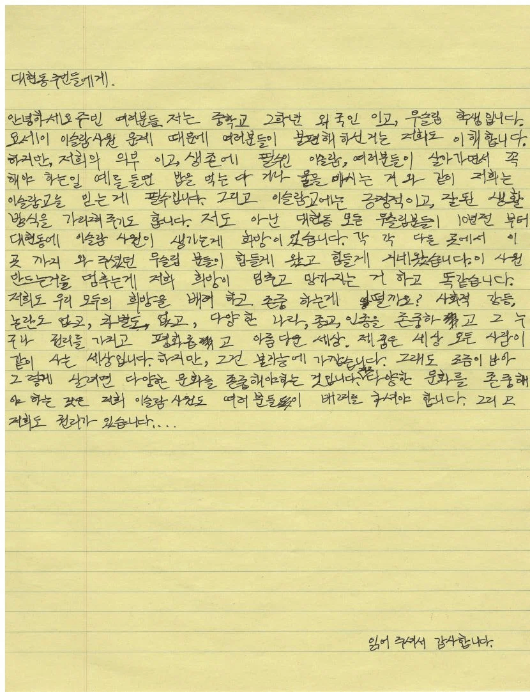

세줄요약
1. 이슬람교는 무슬림에게 생존과 같이 필수적인 종교이며, 대현동 사원 건립은 지난 10년간 이어져 온 무슬림들의 간절한 희망입니다.
2. 사원 건축 중단은 무슬림들의 희망을 무너뜨리는 일이므로, 서로의 권리와 문화를 존중하며 함께 살아가는 태도가 필요합니다.
3. 주민들의 불편함도 이해하지만, 다양성을 인정하고 배려하여 갈등 없는 평화로운 대현동을 만들기를 희망합니다.
답변은 댓글에서 해줄 예정

세줄요약
1. 이슬람교는 무슬림에게 생존과 같이 필수적인 종교이며, 대현동 사원 건립은 지난 10년간 이어져 온 무슬림들의 간절한 희망입니다.
2. 사원 건축 중단은 무슬림들의 희망을 무너뜨리는 일이므로, 서로의 권리와 문화를 존중하며 함께 살아가는 태도가 필요합니다.
3. 주민들의 불편함도 이해하지만, 다양성을 인정하고 배려하여 갈등 없는 평화로운 대현동을 만들기를 희망합니다.
답변은 댓글에서 해줄 예정
외국인이라서 그럼
배려(우린 포기못하니까 니들이 포기해)
그럼 니가 사원이 있는곳으로 꺼져
그리고 개인의 권리는 타인의 권리를 해치지 않는 선까지만 인정해주는거야 좆슬람 쓰발라마
무한정 늘어나는게 아니고 븅신새끼가
생존에 필수불가결 할정도면 느그 나라로 돌아가라
여긴 사막이 아니다
네가 서 있는 땅의 이름은 대한민국이다
꼬우면 떠나라
너네처럼 선택해서 온 것들의 말을 왜 들어줘야하지? 너넨 선택이고 우린 숙명인데
느그나라로 가면 안될까? 제발
의무x, 필수x
느그 나라 가서 해 시발 세종대왕 님처럼 걍 강제로 동화 정책 펼쳐서 우리 쪽으로 만들던가. 추방 시켜야 함 ㄹㅇ;;
뭐 맡겨놧냐?
모스크는 바퀴벌레 집합소라, 완성되면 모세권 처럼 주변에 싹 모임.
그럼 그때가서 수가 많아지면, 똑같은 논리로 기도도 의무라고, 배려해달라고 하루 다섯번 사이렌 울리면서 기도한다. 아잔이라고 하는데 이걸 한국에서 왜 봐주냐.
나중가서 얘들 절기 되면 길가에서 양도 목따고 잡을거임. 그럼 그 시즌에는 거리에서 피냄새 진동한다.
이 씹새끼들은 어린애도 생각이 저따위로 글러먹었는데
나이먹은 아저씨들이 양보를 하겠냐고.
시작조차 들이면 안된다
댓글 9페이지보소ㅋㅋㅋㅋ
ㅈ까시오 ㅈ까
무슬림은 존중해줄 필요가 없다 너희는 오로지 남들에게 강요만하고 난동을 부릴뿐이잖아
10년동안 없이 살아온 노하우가 있을거 아녀
권리는 씹 ㅋㅋ 느그나라에 성당 교회 사당 절 지으면 허락해줌 ㅇㅇ
1. 이슬람교는 무슬림에게 생존과 같이 필수적인 종교이며, 대현동 사원 건립은 지난 10년간 이어져 온 무슬림들의 간절한 희망입니다.
-> 우리만의 희망사항이고 우리 이익이 걸려있는 문제다
2. 사원 건축 중단은 무슬림들의 희망을 무너뜨리는 일이므로, 서로의 권리와 문화를 존중하며 함께 살아가는 태도가 필요합니다.
-> 우리 권리와 문화가 우선이다 닥쳐라
3. 주민들의 불편함도 이해하지만, 다양성을 인정하고 배려하여 갈등 없는 평화로운 대현동을 만들기를 희망합니다.
-> 우리가 갈등없는 평화로움을 대현동에서 누리길 원한다
해석 끝
어째서 현지인들이 불만을 표출하고 어떤 부분이 갈등 요소인지 저언혀 고려하지 않은게 눈에 팍팍 튐
그저 해줘충ㅋㅋㅋㅋ
한국에 이미 모스크 많음
이 글이 널리 퍼지길!
모스크 더 이상 한국에 생기면 안됨. 가뜩이나 지방에는 외국인들 많고 앞으로 점점 더 많아질텐데 이걸 허용해주는 순간 한국은 먹힌다
대신 답변해드림
1. 좆
2. 까
3. 세요
니네가 먼저 우리 희망 무너뜨렸어 지랄 ㄴ
근데 모스크가 꼭 있어야해? 기도라는게 집에서도 할 수 있는거 아냐?
쿠란에 보면 그런거 없음
그냥 정결한 장소에서 메카를 바라보고 하루 5번 기도하라 라고 되어있음.
지금 유럽이나 북미 그리고 한국의 안산에서 보이는 길거리 기도 이런것도 전부 쿠란에는 없는 내용
정확히는 서울에 있는 공동체 모임을 대구에도 만들겠다 이거인거지
왜인지 모르겠는데 경북쪽에 무슬림 출신 유학생이 많더라
다양성 인정은 느그들이 제일 혐오하는 것이고요
무는 슬림하면 맛 없어
자신들을 이해하고 배려할 것을 '요구' 하는 데에는 선민의식이 깔려있음.
그리고 그걸 본인들은 인지하지 못하는 경우도 많음
ai 한글 찐빠난거처럼 글쓰네 ai인가